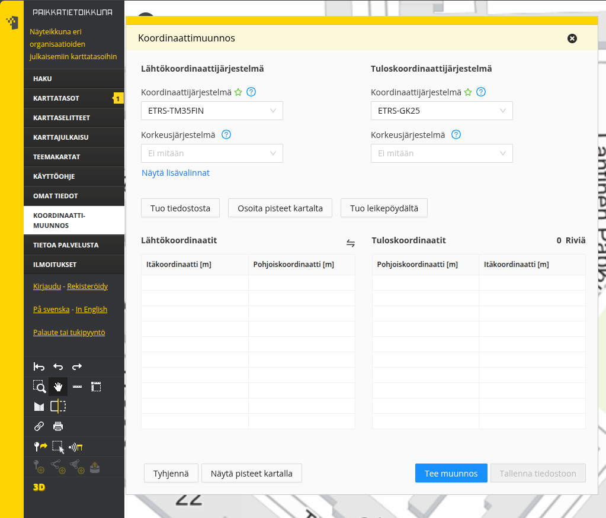

8 Harjoitus 7: Koordinaattijärjestelmät
Harjoituksen sisältö - Harjoituksessa tutustutaan PostGISin tapaan käsitellä koordinaattijärjestelmiä ja karttaprojektioita.
Harjoituksen tavoite - Harjoitusten jälkeen opiskelijalla on perustiedot PostGISin koordinaattijärjestelmien ja karttaprojektion käytöstä.
8.0.1 Valmistautuminen
Avaa pgAdmin selaimeen ja kirjaudu sisään. Avaa Query Tool (Valitse trainingdatabase -> Ylhäältä Tools -> Query Tool). Käytössä tulee olla myös web-selain, joka mahdollistaa pääsyn Maanmittauslaitoksen koordinaattien muunnospalveluun.
8.0.2 Käytettäviä funktioita
Tässä harjoituksessa koordinaattien konversioihin ja muunnoksiin voidaan käyttää mm. seuraavia funktioita:
| PostGIS-funktio | Toiminta |
|---|---|
| ST_GeomFromText(text WKT, integer srid) | Palauttaa ST_Geometry-olion WKT-muotoisesta esitystavasta annetulla EPSG:llä |
| ST_AsText(geometry g) | Palauttaa ST_Geometry-olion määrityksen selväkielisessä WKT-muodossa |
| ST_Transform(geometry g1, integer srid) | Palauttaa geometrian muunnettuna parametrina annetun EPSG:n mukaiseen koordinaattijärjestelmään |
| ST_Transform(geometry geom, text to_proj) | Palauttaa geometrian muunnettuna parametrina PROJ.4-muodossa annettuun järjestelmään |
| ST_Transform(geometry geom, text from_proj, text to_proj) | Palauttaa geometrian muunnettuna PROJ.4-muodossa annetuista järjestelmistä toiseen |
| ST_Transform(geometry geom, text from_proj, integer to_srid) | Palauttaa geometrian muunnettuna PROJ.4-muodossa annetusta järjestelmästä annetun EPSG:n mukaiseen koordinaattijärjestelmään |
8.1 Harjoitus 7.1: Koordinaattipisteen konversio
Muodosta maantieteellisistä ETRS89-koordinaateista (EPSG:4258) 24.3953148 (pituusaste) ja 60.2174696 (leveysaste) Kallion kirkkoa vastaava PostGISin koordinaattipiste:
SELECT
ST_GeomFromText('POINT(24.3953148 60.2174696)', 4258);8.2 Harjoitus 7.2: Koordinaattimuunnos
Tee Kallion kirkon koordinaatteille konversio ETRS-TM35FIN-koordinaattijärjestelmään (EPSG:3067) hyödyntämällä ST_Transform-funktiota.
SELECT
...-- täydennä oikeat funktiot vinkkien perusteella.
-- täydennä lähto- ja tavoitekoordinaattijärjestelmät '...'- kohtiin
SELECT
geometria_tekstinä(koordinaattimuunnos(luo_geometria_tekstistä('POINT(24.3953148 60.2174696)', ...), ...));SELECT
ST_asText(ST_Transform(ST_GeomFromText('POINT(24.3953148 60.2174696)', 4258), 3067));Tuloksena pitäisi tulla seuraavat koordinaattipisteet EPSG:3067-koordinaattijärjestelmässä:
0101000020FB0B0000BE87BABAC1B515411865678EF3795941tai selväkielisemmin:
POINT(355696.43235218147 6678478.225060724)8.3 Harjoitus 7.3: Koordinaattimuunnosten vertailu
Tee seuraavaksi Kallion kirkon koordinaateille muunnos KKJ2-koordinaattijärjestelmään (EPSG:2392).
SELECT
...-- täydennä oikeat funktiot vinkkien perusteella.
-- täydennä lähto- ja tavoitekoordinaattijärjestelmät '...'- kohtiin
SELECT
geometria_tekstinä(koordinaattimuunnos(luo_geometria_tekstistä('POINT(24.3953148 60.2174696)', ...), ...));SELECT
ST_asText(ST_Transform(ST_GeomFromText('POINT(24.3953148 60.2174696)', 4258), 2392));Tuloksen pitäisi olla:
POINT(6678507.76432921 2522091.992364572)Suomessa yleisin koordinaattijärjestelmä lienee ETRS-TM35FIN (epsg:3067), joka kattaa koko Suomen. Kunta- ja aluekohtaisesti käytössä on eri GK-kaistat ETRS-GK19 - ETRS-GK31. Laajempi lista koordinaattijärjestelmistä Suomesta löydät Maanmittauslaitoksen sivuilta.
Välillä pitää tehdä muunnoksia koordinaattijärjestelmien välillä. Silloin kannattaa aina tarkistaa koordinaatit jälkikäteen. Koordinaattiarvojen muunnoksia voi silmämääräisen tarkastuksen lisäksi tehdä myös Maanmittauslaitoksen ylläpitämän koordinaattimuunnospalvelulla Paikkatietoikkunassa. Koordinaattimuunnostoiminto löytyy Paikkatietoikkunan vasemman reunan valikosta nimellä Koordinaattimuunnos.

8.3.1 Koordinaattijärjestelmien määritykset
Koordinaattijärjestelmien kuvaukset löytyvät spatial_ref_sys–taulusta:
SELECT
srid, proj4text
FROM
spatial_ref_sys
WHERE
srid = 2392;Tallennetut muunnosparametrit EUREF-FIN-datumin ja KKJ-datumin välillä antavat maksimissaan kahden metrin virheen Suomen alueella (kuva JHS 197-suosituksesta):

8.3.1.1 Puuttuvia koordinaattijärjestelmiä
EUREF-FIN -pohjaisten koordinaattijärjestelmien käyttöönotossa on EPSG-tietokantaan tuotettu erilaisia versioita ns. GK-koordinaattijärjestelmistä.
8.4 Harjoitus 7.4: Koordinaattijärjestelmien määrittelyt
Tarkista mitkä määrittelyt koulutuksessa käytettävässä tietokannassa on ETRS-GK24FIN -koordinaattijärjestelmälle.
Tutki ensin spatial_ref_sys-taulun kenttiä. Päättele mistä kentästä voi löytyä tiedot koordinaattijärjestelmän tiedoista. Käytä LIKE-operaattoria.
SELECT ...
FROM
...
WHERE
...SELECT *
FROM
spatial_ref_sys
WHERE
"srtext" LIKE '...';
-- täydennä '...' kohtaan arvo siten, että kysely palauttaa
-- ETRS-GK24FIN- koordinaattijärjestelmän määritelmän.SELECT *
FROM
spatial_ref_sys
WHERE
"srtext" LIKE '%ETRS-GK24FIN%';8.5 Harjoitus 7.5: Koordinaattijärjestelmien vertailu
Mitä eroja on EPSG:3132- ja EPSG:3879-koordinaattijärjestelmillä?
SELECT
...
FROM
...
WHERE
...-- Missä sarakkeessa on EPSG- koodit?
SELECT
..., proj4text
FROM
spatial_ref_sys
WHERE
... in (3132, 3879);
-- Valitse EPSG-koodin perusteellaSELECT
srid, proj4text
FROM
spatial_ref_sys
WHERE
srid in (3132, 3879);
-- Huomaat vastauksessa yhden eron. Tämä liitty ns. valeitään (False Easting) joka eroaa koordinaattijärjeselmien välillä.8.6 Harjoitus 7.6: Uuden paikkatietotaulun luominen
Luodaan tietokantaan uusi paikkatietotaulu, jossa on geometria-kenttä, jonka koordinaattijärjestelmä on WGS84. Luodaan tauluun neljä kenttää (gid, name, ICAO, geom):
DROP TABLE IF EXISTS air_geom;
CREATE TABLE air_geom
(
gid serial PRIMARY KEY,
name varchar(254),
ICAO varchar(254),
geom geometry(Point,4326)
);Luetaan airports-taulusta tiedot uuden taulun kenttiin. Muodostetaan ensin SELECT-lauseke, niin voidaan varmistua, että tietojen sisäänluku onnistuu.
INSERT INTO
air_geom(geom, name, ICAO)
SELECT
ST_GeomFromText('POINT(' || airports.longitude|| ' ' || airports.latitude||')',4326),
airports.name, airports.icao_code
FROM
airports;Kahdella putkimerkillä || yhdistetään tekstiä.